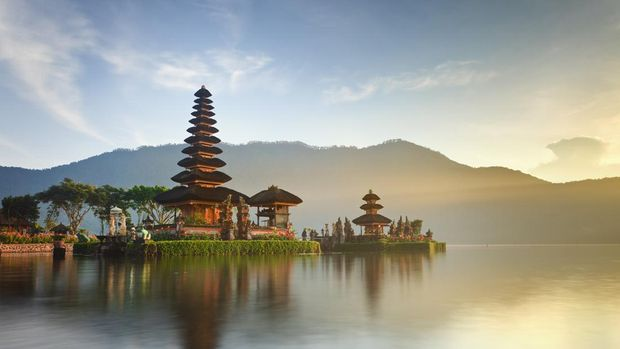

Explore Bali: Surga Wisata Tropis Indonesia
Bali selalu menjadi destinasi yang istimewa bagi banyak wisatawan, baik dari dalam negeri maupun luar negeri. Saat seseorang tiba di Bali, suasana tropis khas pulau ini langsung terasa melalui angin pantai yang hangat, aroma laut, serta sambutan ramah dari masyarakat lokal. Yang membuat Bali berbeda dari tempat lain adalah keseimbangan sempurna antara keindahan alam, budaya yang terjaga, dan perkembangan pariwisata yang tetap mempertahankan ciri khas daerah. Pantai-pantai di Bali seperti Kuta, Seminyak, Sanur, hingga Nusa Dua selalu ramai dikunjungi wisatawan. Namun, tidak hanya pantai yang membuat Bali menarik; sawah terasering di Ubud, air terjun yang tersembunyi, pura yang berdiri megah, hingga tradisi budaya yang terus hidup membuat pulau ini terasa sangat lengkap.
Selain menikmati keindahan pantai, pengunjung dapat merasakan pengalaman budaya yang kuat. Di Ubud, misalnya, seni menjadi bagian dari kehidupan sehari-hari masyarakat. Banyak galeri seni, sanggar tari, hingga workshop kerajinan tangan yang bisa dikunjungi untuk melihat langsung bagaimana proses berkesenian dilakukan. Selain itu, Ubud juga terkenal dengan suasana yang damai sehingga banyak wisatawan datang untuk meditasi, yoga, atau sekadar mencari ketenangan. Sementara itu, bagi pecinta alam, air terjun Tegenungan, Sekumpul, dan Kanto Lampo menawarkan suasana yang segar dan alami. Perjalanan menuju tempat-tempat tersebut sering kali menantang, namun keindahan yang didapatkan sangat sepadan dengan usaha yang dikeluarkan.